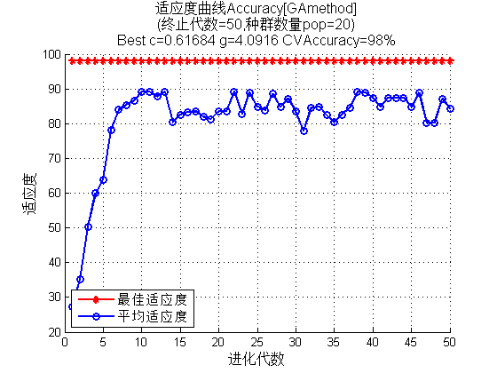

Contents
function Chapter_CharacterRecognitionUsingLibsvm
Matlab神经网络43个案例分析
% 基于SVM的手写字体识别 % by 李洋(faruto) % http://www.matlabsky.com % Email:faruto@163.com % http://weibo.com/faruto % http://blog.sina.com.cn/faruto % 2013.01.01
A Little Clean Work
close all; clear; clc; format compact;
载入训练数据
% 利用uigetfile函数交互式选取训练样本 [FileName,PathName,FilterIndex] = uigetfile( ... {'*.jpg';'*.bmp'},'请导入训练图片','*.jpg','MultiSelect','on'); if ~FilterIndex return; end num_train = length(FileName); TrainData = zeros(num_train,16*16); TrainLabel = zeros(num_train,1); for k = 1:num_train pic = imread([PathName,FileName{k}]); pic = pic_preprocess(pic); % 将标准化图像按列拉成一个向量并转置，生成50*256的训练样本矩阵 TrainData(k,:) = double(pic(:)'); % 样本标签为样本所对应的数字 TrainLabel(k) = str2double(FileName{k}(4)); end
建立支持向量机
[bestCVaccuracy,bestc,bestg] = ... SVMcgForClass(TrainLabel,TrainData,-8,8,-8,8,10,0.8,0.8,4.5)
% 设置GA相关参数 ga_option.maxgen = 100; ga_option.sizepop = 20; ga_option.cbound = [0,100]; ga_option.gbound = [0,100]; ga_option.v = 10; ga_option.ggap = 0.9; [bestCVaccuracy,bestc,bestg] = ... gaSVMcgForClass(TrainLabel,TrainData,ga_option) % 训练 cmd = ['-c ',num2str(bestc),' -g ',num2str(bestg)]; model = svmtrain(TrainLabel, TrainData, cmd); % 在训练集上查看识别能力 preTrainLabel = svmpredict(TrainLabel, TrainData, model);
bestCVaccuracy =
98
bestc =
0.6168
bestg =
4.0916
Accuracy = 100% (50/50) (classification)
 载入测试样本
[FileName,PathName,FilterIndex] = uigetfile( ... {'*.jpg';'*.bmp'},'请导入测试图片','*.bmp','MultiSelect','on'); if ~FilterIndex return; end num_train = length(FileName); TestData = zeros(num_train,16*16); TestLabel = zeros(num_train,1); for k = 1:num_train pic = imread([PathName,FileName{k}]); pic = pic_preprocess(pic); TestData(k,:) = double(pic(:)'); TestLabel(k) = str2double(FileName{k}(4)); end
对测试样本进行分类
preTestLabel = svmpredict(TestLabel, TestData, model); assignin('base','TestLabel',TestLabel); assignin('base','preTestLabel',preTestLabel); TestLabel' preTestLabel'
Accuracy = 93.3333% (28/30) (classification)
ans =
Columns 1 through 13
0 0 0 1 1 1 2 2 2 3 3 3 4
Columns 14 through 26
4 4 5 5 5 6 6 6 7 7 7 8 8
Columns 27 through 30
8 9 9 9
ans =
Columns 1 through 13
0 0 0 1 1 7 2 2 2 3 3 3 4
Columns 14 through 26
4 4 5 5 5 6 6 6 7 7 7 8 8
Columns 27 through 30
8 7 9 9
sub function of pre-processing pic
function pic_preprocess = pic_preprocess(pic) % 图片预处理子函数 % 图像反色处理 pic = 255-pic; % 设定阈值，将反色图像转成二值图像 pic = im2bw(pic,0.4); % 查找数字上所有像素点的行标y和列标x [y,x] = find(pic == 1); % 截取包含完整数字的最小区域 pic_preprocess = pic(min(y):max(y), min(x):max(x)); % 将截取的包含完整数字的最小区域图像转成16*16的标准化图像 pic_preprocess = imresize(pic_preprocess,[16,16]);